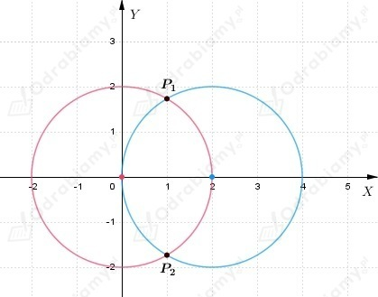
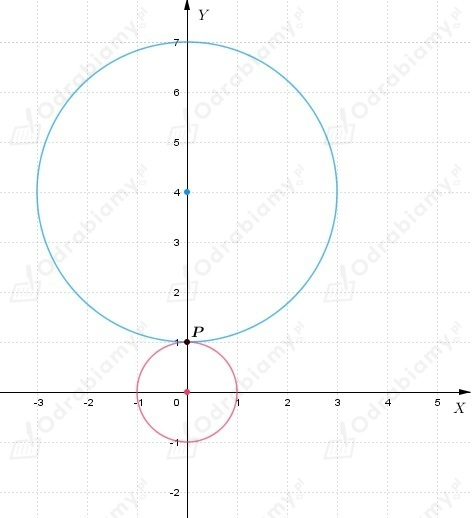
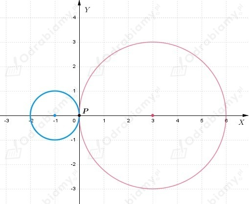

a)
Z drugiego równania wyznaczamy
i podstawiamy do pierwszego równania
Wracamy do drugiego równania i podstawiamy x=1
Zatem rozwiązaniem układu są dwie pary liczb
Interpretacja geometryczna układu równań
Zapisujemy równanie okręgu w postaci kanonicznej

Okręgi mają dwa punkty wspólne: P1(1, √3) i P2(1, -√3).
b)
Z drugiego równania wyznaczamy
i podstawiamy do pierwszego równania
Wracamy do drugiego równania i podstawiamy y=1
Zatem rozwiązaniem układu jest para liczb
Interpretacja geometryczna układu równań

Okręgi mają jeden punkt wspólny: P(0, 1).
c)
Przyrównujemy lewe strony równań do siebie
Wracamy do pierwszego równania i podstawiamy x=0
Zatem rozwiązaniem układu jest para liczb
Interpretacja geometryczna układu równań
Zapisujemy równania okręgów w postaci kanonicznej

Okręgi mają jeden punkt wspólny: P(0, 0).